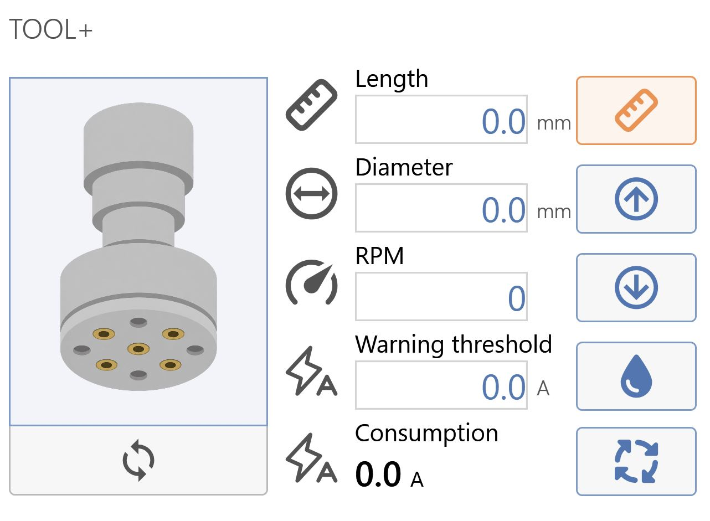
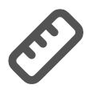

Kur Tool Plus është aktivizuar, ndërfaqja e faqes qendrore ndryshon pamje.
Tool Plus
Ky seksion ndodhet në pjesën e sipërme djathtas të ndërfaqes dhe mundëson menaxhimin e Tool Plus:

Parametrat e Tool Plus

Gjatësia Tregon largësinë nga maja e veglës deri te një pikë e marrë si referencë.
Diametri Madhësia e diametrit maksimal të veglës.
RPM Tregon shpejtësinë maksimale të rrotullimit të boshtit kryesor në rrotullime për minutë. Kjo vlerë lidhet me 100% të potenciometrit të komandimit të diskut.
Pragu i alarmit Pragu i alarmit në Amper.
Konsumi Konsumi aktual në Amper.
Butonat e Tool Plus
Ndrysho modalitetin Mundëson kalimin ndërmjet modalitetit Tool_ dhe Hydrofinishing (nëse është i pranishëm).
Mat veglën me sondë Kryen procedurën për matjen automatike të gjatësisë së veglës Tool Plus.
Ngritja Mundëson ngritjen e bllokut të makinës ku është montuar vegla.
Ulja Mundëson uljen e bllokut të makinës ku është montuar vegla.
Ndezja/Fikja e ujit Mundëson rregullimin e daljes së ujit nga kanali i Tool Plus.
Aktivizo/Çaktivizo rrotullimin Mundëson nisjen ose ndalimin e rrotullimit të Tool Plus.

/0.png)
/3.5_b-20261023-053926.png)
/PART_InnerGrid_System.Windows.Controls.Grid_28831760-20261023-140317.png)
/3.8.png)
/3.9.png)
/3.11.png)
/3.12.png)